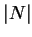

In 1954, Batchelor investigated heat transfer across
cavities filled with a single fluid. He realized that if the cavity
is narrow enough, i.e.  and
and  are large enough, a fully
developed regime could exist in the region sufficiently far from the
floor and ceiling, and the front and back walls. Here the temperature
would vary linearly across the cavity while the purely vertical
velocity would have a symmetric cubic profile. This is identical to
the solution for a cavity bounded only by two vertical walls, reported
in 1946 by Jones and Furry and in many textbooks
(Bird et al. 1960, pp. 297-300; Rohsenhow & Choi
1961, pp. 143-6; Gebhart et al. 1988, pp. 728-30;
Kakaç & Yener 1994,
pp. 342-6).
Various attempts
(Batchelor 1954;
Eckert & Carlson 1961;
Dixon & Probert 1975;
Daniels & Wang 1994)
to find the minimum vertical aspect ratio for which this regime
exists (in the single fluid case), will be treated in chapter 5.
are large enough, a fully
developed regime could exist in the region sufficiently far from the
floor and ceiling, and the front and back walls. Here the temperature
would vary linearly across the cavity while the purely vertical
velocity would have a symmetric cubic profile. This is identical to
the solution for a cavity bounded only by two vertical walls, reported
in 1946 by Jones and Furry and in many textbooks
(Bird et al. 1960, pp. 297-300; Rohsenhow & Choi
1961, pp. 143-6; Gebhart et al. 1988, pp. 728-30;
Kakaç & Yener 1994,
pp. 342-6).
Various attempts
(Batchelor 1954;
Eckert & Carlson 1961;
Dixon & Probert 1975;
Daniels & Wang 1994)
to find the minimum vertical aspect ratio for which this regime
exists (in the single fluid case), will be treated in chapter 5.
In 1972, Aung found exact solutions for the fully developed temperature and velocity profiles in vertical channels open at the top and bottom to a uniform environment. The temperature variation is unchanged, but the velocity profile contains an additional constant governing the influence of the ambient temperature and hence the net vertical mass flux and the deviation of the velocity profile from odd symmetry. Aung also solved the problem for constant wall heat fluxes.
While the most familiar fully developed flows, e.g. axisymmetric and plane Poiseuille flow, and those of Jones and Furry (1946) and Aung (1972), are unidirectional, exact solutions have been published for the plane flow of a pure fluid between vertical (Rao, A. K. 1962) and horizontal (Gill, W. N., del Casal & Zeh 1966) parallel plates with uniform normal interfacial velocity and buoyancy effects due to heat transfer.
In the first treatment of the effect of a diffusing species, Nelson and Wood (1989) showed that Aung's (1972) results for the constant wall temperature case may be simply extended to include constant wall vapour mass fraction provided that the vapour flux is small enough for the interfacial velocity and the interdiffusion of enthalpy to be neglected. The question of when these effects may be neglected is discussed in detail in the present chapter, and chapter 6.
In the study by T. S. Lee et al. (1982) of heat and mass transfer across finite vertical channels, the high mass transfer rate effects of interfacial velocity and the interdiffusion of enthalpy are included but the mass transfer boundary conditions (constant and zero flux at the two opposing vertical walls) prevent the establishment of a fully developed regime, although at the lower mass transfer rates the results indicate invariant axial velocity profiles over much of the channel height if one or other of the buoyancy forces is dominant; i.e. for very large or very small . It is shown here that a fully developed regime can exist with nonzero transverse velocity, but only if it is constant.
Recent numerical work on heat and mass transfer in vertical cavities (McBain 1995; McBain, Harris, Close & Suehrcke 1998) and plane (Yan, Tsay & Lin 1989; Yan & Lin 1990) and axisymmetric (Chang, Lin & Yan 1986; Lin, Chang & Yan 1988; Lee, K. T., Tsai & Yan 1997) conduits filled with gas-vapour mixtures has suggested that mass transfer can significantly change both the flow field and the overall energy transfer rate--a conclusion supported by the present analysis. Indeed, the narrow cavity limit is an excellent example for the study of the effect of a diffusing vapour since analytic expressions for the velocity and temperature fields, as well as the steady energy transfer rate, are available for both the dry gas (Batchelor 1954) and gas-vapour mixture cases (§4.4).